3.2. The Golomb ruler problem and a first model
The Golomb Ruler Problem (GRP) is one of these problems that are easy to state but that are extremely difficult to solve despite their apparent simplicity.
In this section, we describe the problem and propose a first model to solve it. This model is not very efficient and we will develop better models in the next sections.
3.2.1. Description of the problem
A Golomb ruler is a sequence of non-negative integers such that every difference of two integers in the sequence is distinct. Conceptually, this is similar to construct a ruler in such a way that no two pairs of marks measure the same distance, i.e. the differences must all be distinct. The number of marks (elements in the sequence) is called the order of the Golomb ruler.
The Figure A non optimal Golomb ruler of order 4. illustrates a Golomb ruler of order 4 and all its - distinct - differences.
A non optimal Golomb ruler of order 4.
The Golomb ruler is 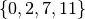 and its length is 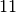. Because
we are interested in Golomb rulers with minimal length, we can fix the first mark to  .
.
Figure An optimal Golomb ruler of order 4. illustrates an optimal Golomb ruler of order 4 and all its - distinct - differences.
An optimal Golomb ruler of order 4.
Its length, 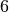, is optimal: it is not possible to construct a Golomb ruler with  marks with
a length smaller than . We denote this optimal value by 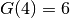. More generally, for a
Golomb ruler of order
marks with
a length smaller than . We denote this optimal value by 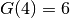. More generally, for a
Golomb ruler of order  , we denote by 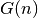 its optimal value. The Golomb Ruler Problem (GRP) is to find, for a given
order , the smallest Golomb ruler with marks.
, we denote by 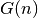 its optimal value. The Golomb Ruler Problem (GRP) is to find, for a given
order , the smallest Golomb ruler with marks.
You might be surprised to learn that
the largest order for which the experts have found an optimal Golomb ruler so far is... 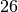. And it was a huge hunt involving hundreds of people!
The next table compares the number of days, the number of participants on the Internet and the number of visited nodes in the search tree to find and prove  , 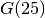 and 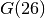[2][3][4].
, 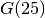 and 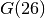[2][3][4].
| Orders | Days | Participants | Visited nodes |
|---|---|---|---|
| 24 | 1,572 | 41,803 | 555,551,924,848,254,200 |
| 25 | 3,006 | 124,387 | 52,898,840,308,130,480,000 |
| 26 | 24 | 2754 | 3,185,174,774,663,455 |
The search for 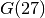 started on February 24, 2009 and at that time was expected to take... 7 years! Still think it is an easy[1] problem? You too can participate: The OGR Project.
You can find all the known optimal Golomb rulers and more information on Wikipedia.
| [1] | Although it is strongly suspected that the Golomb Ruler Problem is a very difficult problem, the computational complexity of this problem is unknown (see [Meyer-Papakonstantinou]). |
| [Meyer-Papakonstantinou] | Christophe Meyer and Periklis A. Papakonstantinou. On the complexity of constructing Golomb Rulers, Discrete Applied Mathematics, 57, pp 738–748, 2009. |
| [2] | http://stats.distributed.net/projects.php?project_id=24 |
| [3] | http://stats.distributed.net/projects.php?project_id=25 |
| [4] | http://stats.distributed.net/projects.php?project_id=26 |
Why Golomb Rulers?
Golomb rulers have a wide variety of applications, including radio astronomy and information theory. In radio astronomy, when constrained to be lined up, telescopes collect more accurate information if they are placed on the marks of a Golomb ruler. In information theory, Golomb rulers are used for error detection and correction.
3.2.2. How to solve the problem?
We follow again the classical The three-stage method: describe, model and solve.
3.2.2.1. Describe
What is the goal of the Golomb Ruler Problem? To find a minimal Golomb ruler for a given
order . Our objective function is the length of the ruler or the largest
integer in the Golomb ruler sequence.
What are the decision variables (unknowns)? We have at least two choices. We can either view the unknowns as the marks of the ruler (and retrieve all the differences from these variables) or choose the unknowns to be the differences (and retrieve the marks). Let’s try this second approach and use the efficient AllDifferent constraint. There are 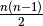 such differences.
What are the constraints? Using the differences as variables, we need to construct a Golomb ruler, i.e. the structure of the Golomb ruler has to be respected (see next section).
3.2.2.2. Model
For each positive difference, we have a decision variable. We collect them in an array Let’s order the differences so that we know which difference is represented by 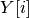.
Figure An ordered sequence of differences for the Golomb ruler of order 4. illustrates an ordered sequence of differences for a Golomb ruler of order 4.
An ordered sequence of differences for the Golomb ruler of order 4.
We want to minimize the last difference in  i.e. 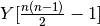 since the first index of an array is .
When the order is 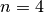, we want to optimize
i.e. 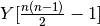 since the first index of an array is .
When the order is 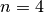, we want to optimize ![Y[\frac{4 (4-1)}{2}-1] = Y[5]](../../_images/math/8f6f6f3b9065e970e7d5f9b684f7022229dcbd91.png) which represents the 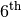 difference. Instead of writing , we will also use the more convenient notation 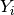.
which represents the 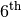 difference. Instead of writing , we will also use the more convenient notation 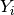.
Figure The inner structure of a Golomb ruler of order 5. illustrates the structure than must be respected for a Golomb ruler of order 5. To impose the inner structure of the Golomb Ruler, we force 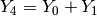, 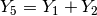 and so on as illustrated in Figure The inner structure of a Golomb ruler of order 5..
The inner structure of a Golomb ruler of order 5.
An easy way to construct these equality constraints is to use an index index going from to 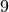[5], an
index i to count the number of terms in a given equality and an index j to indicate the rank of the starting term in each
equality:
int index = n - 2;
for (int i = 2; i <= n - 1; ++i) {
for (int j = 0; j < n-i; ++j) {
++index;
Y[index] = Y[j] + ... + Y[j + i - 1];
}
}
| [5] | Or more generally from the index of the first difference that is the sum of two differences in our sequence 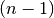 to the index of the last difference 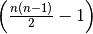. |
3.2.2.3. Solve
Again, at this stage of our discovery of the library, we will not try to find a good search strategy to solve this model. A default basic strategy will do for the moment.
The next chapter Defining search primitives in constraint programming is entirely devoted to the subject of search strategies.
Google or-tools |
User's Manual
Google search
Welcome
Tutorial examples
Current chapter
3. Using objectives in constraint programming: the Golomb ruler problem
Previous section
3.1. Objective functions and how to compare search strategies
Next section
3.3. An implementation of the first model